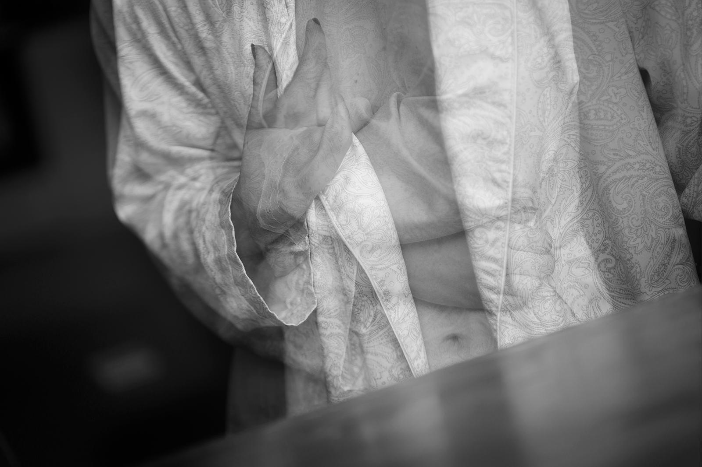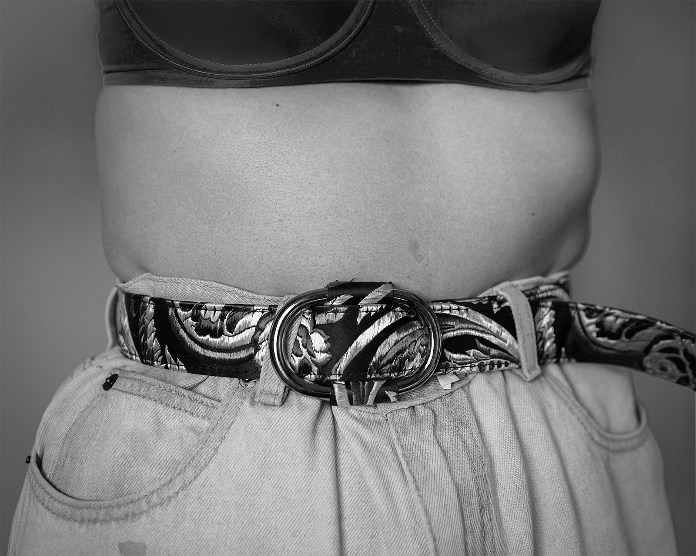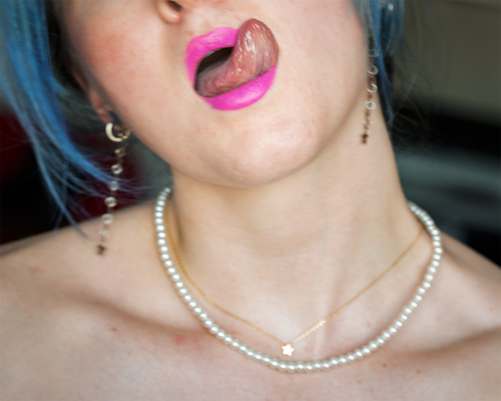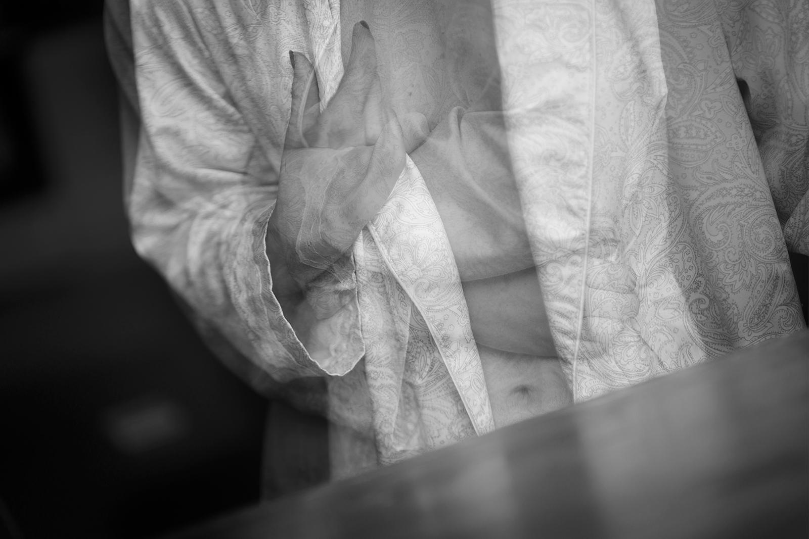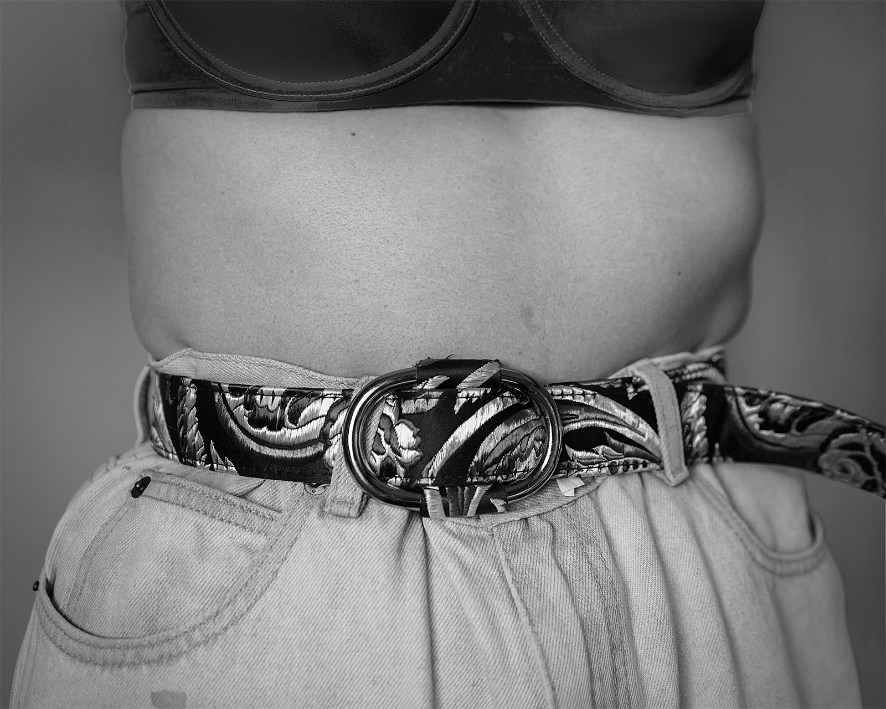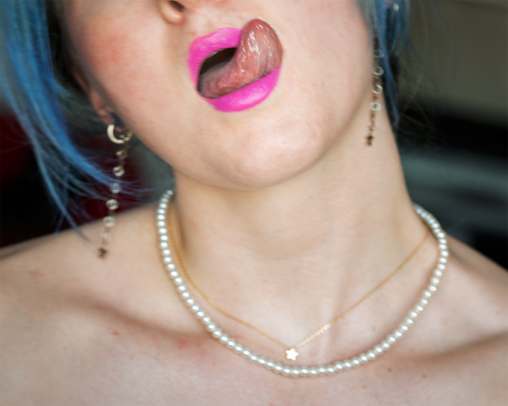
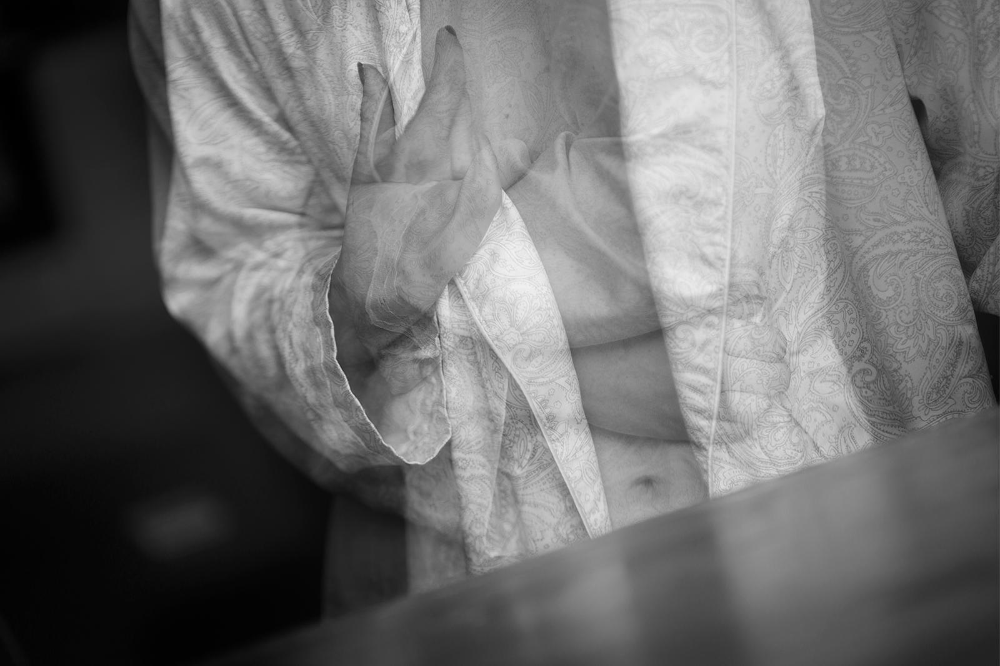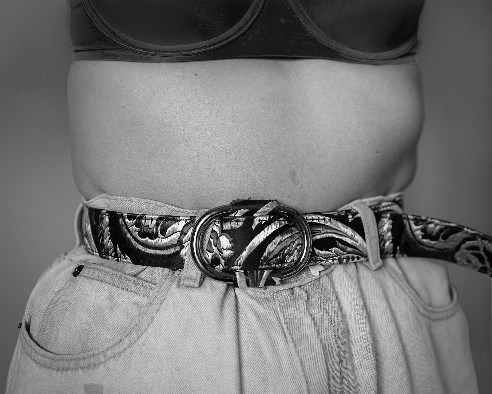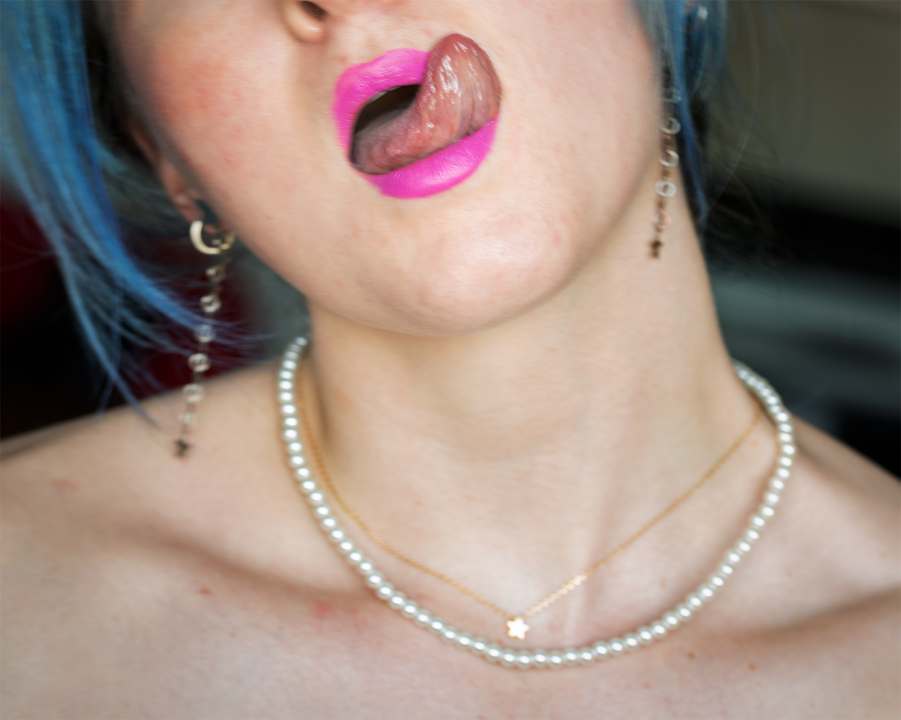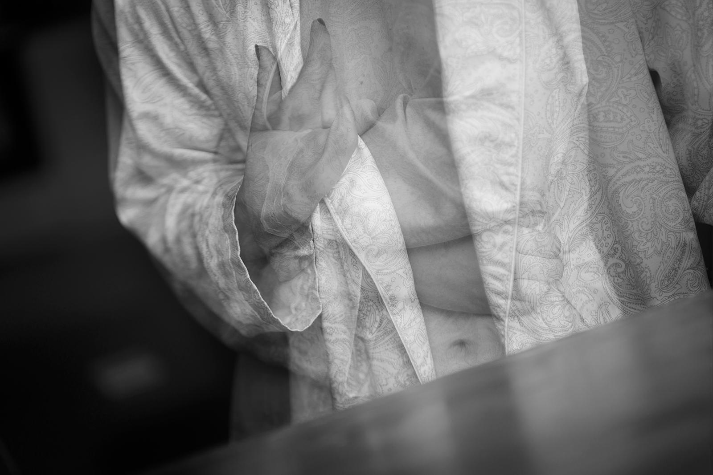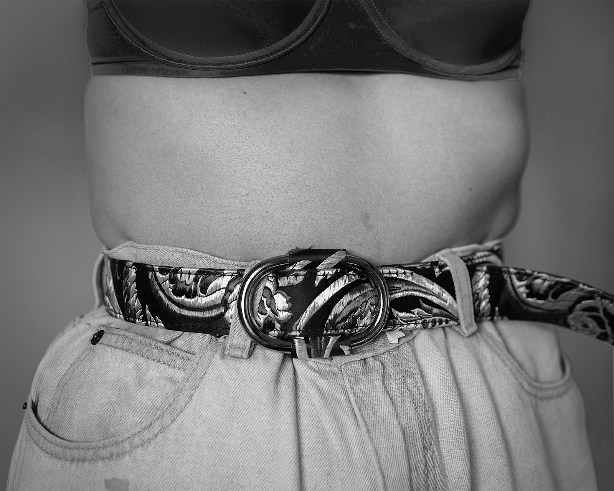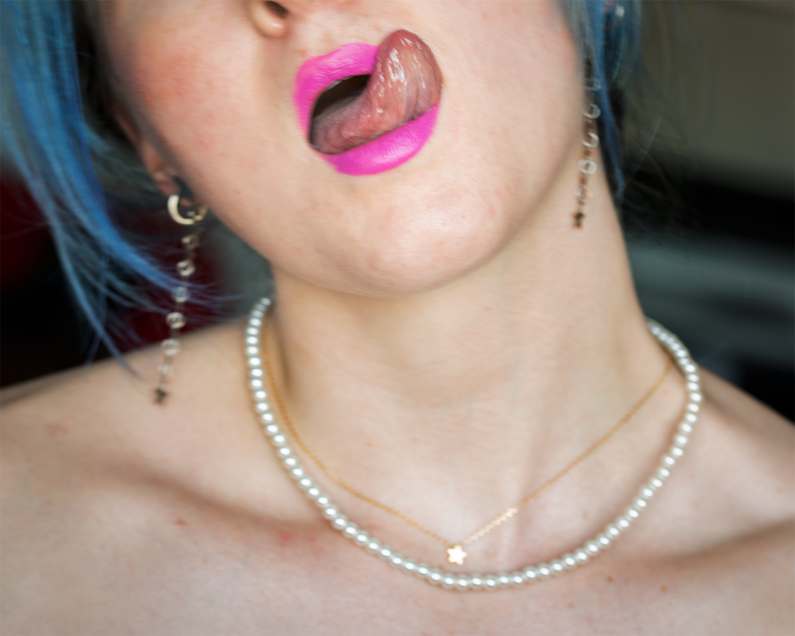biography
Sarelle (she/her) is a multimedia artist, focused on photography. She is an esteemed individual, driven by her passion for feminism, travel, spirituality, and activism. Sarelle’s current project, MANIFESTA, is a series of self-portraits made to heal and find harmony in her identity, femininity, and sexuality; while also actively fighting the oppression and stereotypes of women.
interview
Sarelle in conversation with Caley Beard
CB: Let’s start with something fun - your plans for Puerto Rico! What inspired you to decide to move there after graduation? Is it anything besides escaping the cold?
S: I knew I wanted to move far away from Massachusetts, and I wanted warmer weather because I do NOT do well mentally during these cold, mundane winters. The ocean is a very important part of my life and of who I am, so that also became part of the decision to move to Puerto Rico (instead of southwestern U.S.). The Spanish language also drew me in. I have always wanted to become fluent in Spanish and immersing myself in the language is going to be the best way to do that! Politics, volunteering, and non profit work are another part of my decision, honestly. The U.S. treats Puerto Rico like shit. Being from the States, and a privileged state at that, I want to give back to the communities in PR and do what I can for the people who haven’t received what they deserve from the U.S. government, like hurricane relief.
CB: I’m excited to see how this coming change in your environment and living space will impact your work, particularly your self-portraiture. What motivates you to take self-portraits?
S: Honestly, self-healing and self-love. It’s a therapeutic exercise for me to turn the camera on myself, see how I photograph myself, and what it says about me. Becoming comfortable with looking at myself is important because it is something I’ve always hated. I photograph the world and people in a way that is both empathetic and exposing, appreciating and calling attention to both. So, to take that way of photographing, using it with myself, it becomes that much more of a connective exercise in self-love and identity. I also hope that others who have felt the same about themselves as I have, can look at these self-portraits and see me, my strength and vulnerability in making this work. Hopefully they can learn something about themselves from it.
CB: We’ve spoken a bit about your upbringing in New Bedford and the community there. Since your father was on the school committee of your school district and your older brother in the grade above you, you felt your last name, Veitch, defined you within that community as someone you didn’t see within yourself. You’ve previously described that you felt expected to uphold the role as the “perfect daughter” of the “perfect family.” I’m interested to know more about how you think this is reflected in your work, which in many ways takes on challenging the stereotypes of being a “perfect woman”.
S: Damn, this is a GREAT question with that context. I think my work is showing that I'm not conforming to that part of my identity anymore. I have removed my last name from my identity, only signing my name as “Sarelle,” and I feel so much more myself. This idea of the values I was taught to uphold and the way they shaped how I viewed myself, how I thought others viewed me, was really hard on my mentality and identity. This work is a process of re-learning who I am and publicly stating that, “This is Me.”
CB: Can you elaborate a little bit about your use of black and white vs. color in your images?
S: I love black and white. It’s my default. Whether I’m romanticizing the history of photography and its original form of being, or keying into the simplicity of it, the idea is that black and white takes away the distracting factors that color can have. The priority for me is just on the light and composition of the photograph. Unless there is a specific reason why color elevates that image, I use black and white.
CB: Is there one big takeaway you hope the viewers of your work have?
S: Loving yourself, being confident in who you are, all that shit. It is NOT selfish, AND This shit is normal-“shit” being womanhood, and all that comes with it.
CB: Do you have a favorite of your own photographs from this past year? How about of all time?
S: I have a couple, but the two images I always come back to are, the image of myself on the couch with bleach in my hair and a clay mask on my face, and the image of my face with spot cream on my acne.
CB: If you could throw a dinner party with five of your influences - dead or alive - who would they be, and why?
S: Marilyn Monroe; she has been a figure who I have loved and admired, as well as respected, for as long as I can remember. I want to listen to her voice, hear her stories from her point of view about womanhood and feminism. Neil deGrasse Tyson, because I LOVE the universe. I’d want to discuss physics, space and energy. Plus, the way he talks is so great. My Papa (dad’s papa) because I never met him, but my dad adored and looked up to him a lot. He photographed a lot as well, and I want to know him. It is as simple as that. Miley Cyrus because I respect and love the shit out of her! She is unapologetically herself in every way and I look up to her for that - major fuck-it attitude. Lastly, AOC, which I don’t think needs much explanation - she is a BADASS; I love that woman.
CB: We were talking about actors and women in media, how growing up we’ve wanted to be them, and how you’ve recently realized you also wanted to be more with them. Do you think the sexually suggestive images of your own body is not only confronting the male gaze but also a way of taking control of and owning/exploring your own sexual identity?
S: 100% !!!!!!! That is exactly what I’m doing!